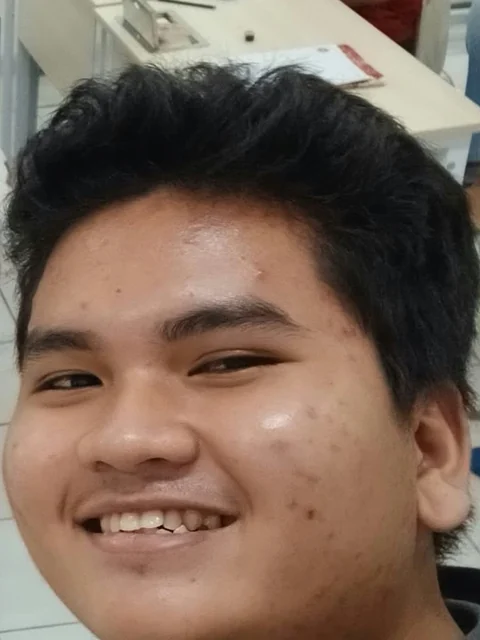

Ernest Benyamin Hinn Tambuwun
Mahasiswa Teknik Informatika · Semarang, Indonesia
- S1 Teknik Informatika
- AI dan Big Data
- 2024 – 2028
Tentang saya
Saya mahasiswa Teknik Informatika dengan pemahaman kuat dalam perancangan database relasional, pengembangan aplikasi web, dan integrasi sistem IoT. Saya tertarik pada integrasi desain antarmuka (UI/UX), logika backend, serta pemanfaatan sensor dan cloud monitoring.
Saya terbiasa membangun sistem dengan role-based access control serta aplikasi pendukung keputusan sederhana, dan siap belajar cepat serta beradaptasi di lingkungan kerja.
Pendidikan
- Universitas Katolik Soegijapranata, Semarang 2024 – 2028
S1 Teknik Informatika / Artificial Intelligence & Big Data. IPK 3,26 / 4,00. - Mata kuliah relevan (nilai A): Database Programming, Relational Database Management System (RDBMS), Client Server Computing, Internet Programming, Software Engineering, Internet of Things.
- Mata kuliah pendukung: Decision Support System, Statistika.
Proyek akademik dan pengalaman
- IoT Developer: Detektor Penggunaan AC (Arduino dan ESP8266) 2026
Sistem monitoring penggunaan AC secara real-time dengan Arduino, ESP8266, sensor IR Receiver (membaca sinyal remote AC), dan DHT-11 (suhu dan kelembaban). Data dikirim lewat Wi-Fi ke ThingSpeak untuk disimpan dan divisualisasikan, dengan program C++ di Arduino IDE. - Full-Stack Web Developer: Berkah Elektronik (CRUD Laravel 11) 2025 – sekarang
Aplikasi CRUD dengan Laravel 11, PHP, dan MySQL: konfigurasi database, migration, controller, model, validasi form, dan tampilan Blade. - System Analyst / DSS Developer: Prioritas Penagihan Utang Kantin Kampus 2026
Aplikasi desktop Python (Tkinter) dengan metode AHP untuk pembobotan kriteria dan uji konsistensi, serta SAW untuk perangkingan, lengkap dengan validasi input dan antarmuka sederhana untuk operator non-teknis. - UI/UX dan System Designer: Desain Toko Elektronik 2025 – sekarang
Wireframe dan desain antarmuka dengan Figma agar alur pengguna (user flow) mudah dipahami. - Client-Server dan Game Logic Developer: jMessenger 2025 – sekarang
Aplikasi chat dengan game gunting-batu-kertas memakai Java client-server, dengan sinkronisasi data real-time antara pemain dan server. - Web Developer: Website 17+8 2025 – sekarang
Website sederhana dengan HTML dan CSS untuk menyampaikan informasi secara terstruktur.
Kemampuan
Database dan Backend
- Perancangan ERD dan relasi (MySQL)
- Role-Based Access Control di Laravel
- Data transaksi dan produk
- CRUD Laravel 11
Programming
- PHP (Laravel)
- Java
- Python
- C++ (Arduino)
- HTML
- CSS
- JavaScript
IoT dan Hardware
- Arduino
- ESP8266
- Sensor DHT-11
- IR Receiver
- ThingSpeak
Design dan Tools
- Figma (UI/UX dasar)
- Git/GitHub
Soft skills
- Analisis masalah
- Komunikasi tim
- Adaptabilitas tinggi
- Manajemen waktu
- Cepat belajar teknologi baru